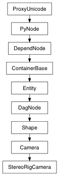

Returns the distance to the far clipping plane.
| Return type: | float |
|---|
Derived from api method maya.OpenMaya.MFnCamera.farClippingPlane
Returns the distance to the near clipping plane.
| Return type: | float |
|---|
Derived from api method maya.OpenMaya.MFnCamera.nearClippingPlane
Determine if motion blur is on/off for the camera.
| Return type: | bool |
|---|
Derived from api method maya.OpenMaya.MFnCamera.isMotionBlur
Convenience routine to set the camera viewing parameters. The specified values should be in world space where applicable.
| Parameters: |
|
|---|
Derived from api method maya.OpenMaya.MFnCamera.set
Undo is not currently supported for this method
Set the distances to the Far Clipping Plane.
| Parameters: |
|
|---|
Derived from api method maya.OpenMaya.MFnCamera.setFarClippingPlane
Turns motion blur on/off for the camera.
| Parameters: |
|
|---|
Derived from api method maya.OpenMaya.MFnCamera.setMotionBlur
Set the distances to the Near Clipping Plane.
| Parameters: |
|
|---|
Derived from api method maya.OpenMaya.MFnCamera.setNearClippingPlane
Set the distances to the Near and Far Clipping Planes.
| Parameters: |
|
|---|
Derived from api method maya.OpenMaya.MFnCamera.setNearFarClippingPlanes
Undo is not currently supported for this method